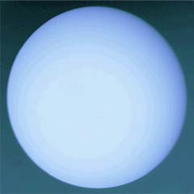
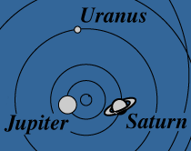

| Mass (Earth=1) | 146 |
| Equatorial diameter (km) | 51,800 |
| Period (years) | 84.0 |
| Mean distance from Sun, 10^6 km | 2,870 |
| Density (water=1) | 1.21 |
| Surface gravity m/s^2 | 7.77 |
|

Uranus is the only planet which lies on its side as it revolves around the Sun. Because it is at the limit of naked eye visibility, Uranus was unknown until William Herschel discovered it with a telescope in 1781. The rings were revealed when they occulted a star in 1977.
Uranus and Neptune are sometimes referred to as the "ice giants", their compositions being dominated by water, ammonia (NH3), methane (CH4)' and some 'rock" composed of silicates and metals. They have a hydrogen/helium atmosphere which is thought to have a mass of around 1 - 3 times the mass of the Earth.
|